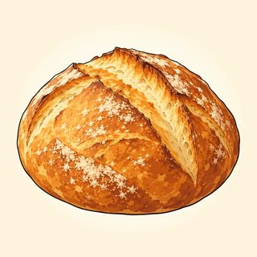

The Mot Juste — Classroom Materials
Everything to print for Classes C1–C3: force-cline picture cards and word strips, connotation and prosody cards, register-room and tone cards, binomial and collocation cards, the welcome question cards with the C1 diagnostic grid and writing-sample rubric, new identity cards, the Mot Juste Editing Workshop texts, the Five Voices message cards and voice specifications, the Naturalness Audit texts, the Odds and Ends card game, and the teacher's listening scripts.
What to Print
| Set | What | How many | Used in |
|---|---|---|---|
| A | Flashcards: force clines (pictures) + cline word strips, connotation and prosody cards, register rooms (pictures), tone cards, register marker cards, binomial pictures, strong-collocation cards | 1 set for the board · 1 set of cline word strips and register marker cards per pair | C1, C2, C3 |
| B | Welcome question cards (16) + C1 diagnostic grid + writing-sample rubric | Cards: 1 set per 16 learners · grid and rubric: teacher only | C1 |
| C | New identity cards (6 professional profiles) | 1–2 sets, on a side table | C1, C2, C3 |
| D | Mot Juste Editing Workshop: 4 vague texts (with teacher models) | 1 text per group of 3 (cut off the gray model first) | C1 |
| E | Five Voices: 6 message cards + voice specification sheet + Clang hunt slips | 1 message card and 1 specification sheet per group · 1 slip per learner | C2 |
| F | Naturalness Audit: 4 near-native texts (with teacher keys) | 1 text per pair; two pairs share each text for the cross-check (cut off the key) | C3 |
| G | Game: Odds and Ends (binomial card game) | 1 envelope of cards per group of 3–4 | C3 · C4 warmer |
| H | Listening & dictation scripts | Teacher only | C1, C2, C3 |
A · Flashcards — Force Clines & Connotation (1.1)
Put the eight picture cards on the board in C1. Pairs get the cline word strips (below), cut up and shuffled, and have 90 seconds to place each word under the right picture, weakest to strongest. The picture shows the neutral middle of each cline; the sub-line is your answer key. Leave the cards up: learners will reach for them all term.


Cline word strips (1 set per pair · cut up and shuffle)
| tiny | minuscule | huge | vast | colossal | chilly |
| freezing | glacial | warm | sweltering | scorching | pricey |
| exorbitant | extortionate | irritated | annoyed | furious | livid |
| content | delighted | elated | ecstatic | uneasy | frantic |
Discussion after sorting: anxious can be stronger or weaker than worried depending on the speaker; extortionate adds a moral charge (someone is exploiting you); glacial is also used figuratively (glacial progress, a glacial stare). Clines are about force, but each step also shifts register or connotation.
Blue = connotation pairs · red = careful senses · amber = semantic prosody (the typical, mostly negative company on the sub-line).
A · Flashcards — Register & Tone (1.2) · Binomials & Collocation (1.3)
The five register rooms go on the wall in C2: when a learner produces a sentence, ask "Which room is that for?" Hold up the tone cards during the tone drill. Pairs sort the register marker cards onto a HIGH / LOW line (the letter in the corner is the key; cut it off for the sort).


| notwithstanding H | hereby H | It was decided that… H | remuneration H | ascertain H | furthermore H |
| sort out L | gonna L | you know L | stuff L | no worries L | Got a minute? L |
For C3: the binomial picture cards start the lead-in ("butter and bread?"). The strong-collocation cards go on the board during the Meaning stage; the sub-line shows the tempting but non-idiomatic alternative.



B · Welcome Question Cards (1.1 · C1 mingle)
Print on four colors of paper if you can (or rely on the colored top edges). Each learner takes one card of each color. Every card may be answered from real life, a new identity, or invention; or say "Pass." TAKE A POSITION cards carry an assigned side so no one has to reveal a personal view. Encourage one follow-up question per card.
Describe a place you know well so precisely that your partner could walk through it with their eyes closed. What does it smell and sound like?
Describe the first ten minutes of a busy morning somewhere you know (a kitchen, a station, an office, a market), real or invented.
Describe an object you use every day: not what it does, but its character. Would you call it elegant, sturdy, temperamental, faithful…?
Describe a person you admire (a public figure, a fictional character or someone invented) without using good, nice, great or interesting.
What's the difference, for you, between frugal and cheap? Give an example of each.
What's the difference between assertive and pushy? Is the line the same in every culture or workplace?
What's the difference between childlike and childish? Describe someone (real or invented) who is one but not the other.
What's the difference between famous, renowned and notorious? Name a (non-political) example of each.
"A simple word is almost always better than an impressive one." Give two reasons and an example.
"Translation apps have made learning a language to a high level unnecessary." Give two reasons and an example.
"Every workplace should have a style guide for its writing." Give two reasons and an example.
"It's rude to correct a colleague's English." Give two reasons and an example.
You can't attend a colleague's farewell lunch. Tell a close friend, then the colleague, then write one line for a card signed by the whole team.
A meeting has moved to Thursday. Text a teammate, tell a client, then announce it formally to a committee.
A café was far too noisy. Tell a friend, speak to the manager, then write one sentence of an online review.
Thank someone who helped you: a friend, a mentor, and then in the first line of a formal letter of thanks.
B · C1 Diagnostic Grid (teacher only · never share)
Mark each column ✓ masterful: consistent and effortless · ~ strong, with gaps or occasional misfires · ✗ avoids it or can't produce it yet. What to listen for: Precision = the exact word vs weak word + modifier; graceful paraphrase · Range = explaining nuance, idiom, advanced collocation, clefts, concession · Naturalness = native-like chunks vs homemade ones; note fossils (informations, I am agree, since three years) · Register control = the whole cluster moves on the SAY IT THREE WAYS cards; warm and formal at once. Add the writing-sample score (/12) after class.
| Name | Precision | Range | Naturalness | Register control | Writing /12 | Notes (one strength · one focus · fossils) |
|---|---|---|---|---|---|---|
Writing-sample rubric (0–3 per row · max 12)
| Row | 0 | 1 | 2 | 3 |
|---|---|---|---|---|
| Precision | vague throughout (good, nice, a lot of) | mostly general words; some weak word + modifier | often precise; occasional approximation | consistently exact; words weighted for force and connotation |
| Range | safe, repetitive language | C1 structures and vocabulary, used cautiously | wide range, including idiom and complex structures, used with ease | full range deployed for effect (emphasis, understatement, concession) |
| Naturalness | frequent translated chunks | several homemade collocations or fossils | mostly native-like; one or two slips | reads as written by a proficient user; chunks exact |
| Register & tone control | register wrong for the reader | register mostly right; stray clangs or flat tone | register consistent; tone appropriate | register and tone set deliberately (Prompt B: both versions fully convincing) |
Guide: 10–12 already performing at C2 in writing (Stretch tasks; lead peer review) · 6–9 typical C2 entry profile · 5 or less and mostly ✗ in the grid: check the placement privately with the toolkit's oral interview; the C1 course may serve the learner better.
C · New Identity Cards (1.1 · 1.2 · 1.3)
Any learner may use a card instead of their own life, in any task: no reason needed. Each profile has material for all three lessons: something to describe precisely (1.1: mingle, writing sample, journal), a message with many readers (1.2: journal, online project) and a slip (1.2 and 1.3 journals). Learners may keep the same card for the whole module.
Marisol Ortega — freelance conference interpreter
Something I can describe precisely: the interpreting booth at the back of a conference hall: narrow, warm, humming with electronics, smelling faintly of coffee and dust.
A message with many readers: a three-day conference was cut to two days; I had to tell the organizers, the other interpreters and my family.
A slip: I once told a room of engineers that a design was "a mute point." A delegate smiled and wrote "moot" on his notepad.
Kwame Mensah — hospital pharmacist
Something I can describe precisely: the pharmacy at 7 a.m.: fluorescent light, the rattle of tablets in counting trays, the printer that jams every morning.
A message with many readers: a common medication is out of stock for two weeks; I had to tell doctors, nurses and patients.
A slip: I emailed a senior consultant "Hey, quick q" and received a two-page reply beginning "Dear Mr. Mensah."
Yuki Tanabe — museum exhibition designer
Something I can describe precisely: an empty gallery the night before an opening: echoing, cool, every surface waiting for its object.
A message with many readers: an exhibition's opening was postponed by a month; I wrote to lenders, staff, the press and friends.
A slip: I described a donor's gift as "cheap" when I meant "inexpensive to transport." The room went very quiet.
Anton Petrov — software localization manager
Something I can describe precisely: a product launch dashboard on the last night: twelve languages, a hundred red flags turning green one by one.
A message with many readers: the French and Arabic versions of an app will launch a week later than the rest; I told the team, the client and users.
A slip: I wrote "The new feature caused great success" in a report; my editor changed it to "led to."
Leila Haddad — high school chemistry teacher
Something I can describe precisely: the lab after a class: the sharp smell of vinegar, a forgotten notebook, a sink full of beakers.
A message with many readers: the science fair was moved from Friday to Monday; I told students, parents and the principal.
A slip: I once told a class the result was "a predetermined conclusion." A student asked if I meant "a foregone one."
Rafael Souza — sound engineer, concert hall
Something I can describe precisely: the hall five minutes before a concert: the murmur of the audience, tuning strings, the faint hiss of the air vents.
A message with many readers: a soloist canceled on the day; I helped write the announcement for the audience, the website and the orchestra's social media.
A slip: I said we'd "go back and forth, forth and back" on the mix until it was right. Nobody corrected me; everybody noticed.
D · Mot Juste Editing Workshop — Vague Texts (1.1)
One text per group of 3. Each is correct, clear and lifeless. Groups make at least ten substitutions (at least one each in force, connotation, specificity and register), change no facts, and log four changes. The gray model at the bottom is for you: cut it off before class. It is one good version, not the answer; any version that keeps the facts and earns every change is correct.
The new exhibition at the City Museum is very good. It has a lot of old things from different parts of the world, and some of them are really nice to look at. The rooms are big and the lights are quite dark, which makes a nice feeling. There are some things for children to do. The café is okay and not very expensive. It is a good way to spend an afternoon, and a lot of people will probably like it very much.
Hi all, just a quick thing about the new software. It has had some problems this week. Some people said it was very slow and a few files got lost, which made a lot of people feel bad. The IT people are looking at it and they think they will fix it soon. Until then, please save your work a lot and tell IT if something bad happens. Thanks for being nice about it.
I bought this backpack last month and I think it is good. It is strong and has a lot of pockets. The material feels nice, and it doesn't get wet in the rain. The straps are a bit hard on the shoulders after a long time. The price is high, but I think it is worth it. I would tell other people to buy it.
The park clean-up on Saturday went very well. A lot of people came, more than we thought. We took a lot of trash out of the pond, and some of it was very old and bad. The weather was bad in the morning but got better later. Everybody worked very hard and there was a nice feeling. We want to say thank you to the bakery that gave us food. We will do it again in the spring.
E · Five Voices — Message Cards (1.2)
One card per group. Every version (official notice, friendly email, press release, social post, tribute) must contain the same facts. All six stories are invented. The tribute celebrates a retirement or a closing: it is never about a death. Any group may swap its card.
The Riverside Bakery closes
- closes permanently on Saturday, March 28
- open for 42 years; founder Rosa Delgado (74) is retiring
- her recipes are being donated to Harbor City Community College's culinary program
- on the last day, every customer gets a free loaf
- Rosa: "I baked for my neighbors, and they fed me with their stories."
The Orpheum closes for restoration
- closes on June 1 for an 18-month restoration
- built in 1931; the city's oldest movie theater
- will reopen with accessible seating and a restored ceiling mural
- farewell screening: the first film it ever showed, free, on May 31
- Manager Tom Reyes: "We're not saying goodbye. We're saying intermission."
Ms. Okafor retires
- Adaeze Okafor retires after 35 years as librarian at Lincoln Middle School
- her lunchtime reading club had more than 2,000 members over the years
- the library will be renamed the Okafor Library on May 15
- former students are invited to the ceremony
- Ms. Okafor: "Every child is a reader. Some just haven't met their book yet."
Harbor Street Pool closes for rebuilding
- closes on September 1 for two years of reconstruction
- opened in 1968; generations of residents learned to swim there
- a free shuttle will run to Eastside Pool in the meantime
- the new pool will have a teaching pool and solar heating
- Parks Director Ana Ruiz: "We're building a pool for the next fifty years."
The Valley Gazette ends its print edition
- the final printed issue appears on December 31
- published in print for 110 years
- the Gazette continues online, free, from January 1
- the last print issue will feature 110 letters from readers
- Editor Joan Park: "The ink is drying, but the paper isn't."
Tuesday Jazz Night ends
- the weekly Tuesday Jazz Night at Maple Community Center ends after 25 years
- bandleader Sam Whitfield (80) is retiring from the stage
- final concert: Tuesday, April 9, admission free
- the center will start a youth jazz workshop in the fall
- Sam: "Twenty-five years of Tuesdays. Not a single one was the same."
E · Five Voices — Voice Specifications & Clang Hunt Slips (1.2)
One sheet per group. Each learner reads the row for their voice before drafting. A clang is any marker that belongs in another row.
| Voice | Field · tenor · mode | Must have | Must not have | Deliver it… |
|---|---|---|---|---|
| 1 Official notice | civic / legal · institution to the public, distant · written, planned | Notice is hereby given that… · passive and impersonal · dates in full · complete facts | contractions · we're thrilled · exclamation marks · quotations | slowly, evenly, falling tones: grave |
| 2 Friendly email | personal · friend to friend, close · written but spoken-like | a greeting by first name · contractions · a shared memory · a suggestion (Let's go…) | Please be advised · nominalizations · a formal sign-off | brisk and warm, wide pitch range |
| 3 Press release | news / public relations · organization to journalists · written, planned | FOR IMMEDIATE RELEASE · headline · CITY, Date — · third person · one quotation · "About…" line · ### | I or you · slang · exaggeration without facts | crisp, confident, newsreader pace |
| 4 Social post | community news · organization or fan to the public, friendly · written, spontaneous | at most 280 characters · energy · the key fact and date · at most one hashtag | subordinate clauses · notwithstanding · more than one hashtag | quick, bright, punchy |
| 5 Tribute | ceremonial · speaker to a gathered community, warm · written to be spoken | a concrete detail · rhythm (a group of three, a balanced closing line) · warmth and dignity | slang · jokes at anyone's expense · pomposity (utilize, commence) · references to death | slowly, with pauses; let the last line land |
Clang hunt slips (1 per listener · cut)
| Clang hunt. Version A = voice __ · B = __ · C = __ · D = __ · E = __ A clang I heard: ______________________ One strength: ______________________ | Clang hunt. Version A = voice __ · B = __ · C = __ · D = __ · E = __ A clang I heard: ______________________ One strength: ______________________ |
| Clang hunt. Version A = voice __ · B = __ · C = __ · D = __ · E = __ A clang I heard: ______________________ One strength: ______________________ | Clang hunt. Version A = voice __ · B = __ · C = __ · D = __ · E = __ A clang I heard: ______________________ One strength: ______________________ |
1 Notice: Notice is hereby given that the Riverside Bakery will cease trading permanently at close of business on Saturday, March 28. All outstanding orders must be collected no later than that date. · 2 Email: Hi Mia! Did you hear Rosa's retiring? The Riverside's closing on the 28th, after 42 years! Remember those Saturday cinnamon rolls? Let's go one last time; apparently everyone gets a free loaf. · 3 Press release: FOR IMMEDIATE RELEASE. Beloved Riverside Bakery to Close After 42 Years. HARBOR CITY, March 2 — The Riverside Bakery will close on March 28 as founder Rosa Delgado, 74, retires. Her recipes will be donated to Harbor City Community College's culinary program. "I baked for my neighbors, and they fed me with their stories," Delgado said. Every customer on the final day will receive a free loaf. ### · 4 Post: After 42 years, Riverside Bakery closes Sat 3/28 as Rosa retires. Free loaf for everyone on the last day. Go say thank you! #RiversideForever · 5 Tribute: For forty-two years, this corner smelled of cinnamon before the sun came up. Rosa fed students before exams, workers before their shifts, and neighbors who simply needed a warm place to stand. She gave us bread; we gave her our stories. Rosa, the ovens may cool, but this neighborhood will stay warm for a very long time.
F · Naturalness Audit — Near-Native Texts (1.3)
One text per pair; two pairs share each text for the cross-check. Each text hides exactly seven problems among many correct chunks. Labels: ORDER (reversed binomial) · PARTNER (non-idiomatic collocate) · GARBLE (misheard fixed expression) · REGISTER (chunk in the wrong room) · STUFFING (too many chunks in one sentence). Cut off the gray key before class. Text C is the most accessible.
By and large, this year's Regional Libraries Conference was a resounding success. The keynote on digital archives was thought-provoking, if a little long, and the poster session really peaked my interest. Good workshops are usually few and rare, but these were excellent. I must admit I was harshly disappointed by the panel on funding: the outcome felt like a predetermined conclusion from the first minute, and the speakers, all of whom had a vested interest in the new system, went forth and back without getting anywhere. That said, the coffee breaks were short and sweet, and I met more colleagues in two days than in a year. For all intensive purposes, this is now the event of the year. Believe it or not, needless to say, when all is said and done, next year's venue is still up in the air.
Friends and colleagues: it's not every day we say goodbye to someone who has been part and parcel of this hospital for thirty-one years. When Grace joined the pharmacy, the computers were run-of-the-factory and the coffee was worse. She has seen the downs and ups, the late nights and the endless wear and tear. If truth be told, by and large, at the end of the day, she drove a hard bargain with every supplier, and a harder one with us. Her motto was to nip every problem in the butt. She was never one for quiet and peace. Pursuant to the foregoing, she will be sorely missed. Grace, your hot ambition was always to retire somewhere warm and sunny, and, believe it or not, that day has come. Please raise your glasses: to Grace!
Believe it or not, Casa Lupe is only three years old, which in a doggy-dog business like this one is no small feat. The menu is sweet and short, and the tacos are a loud success. The salsa has a real kick, the tortillas are fresh, and the service is warm. My one complaint: the guacamole portions are on the stingy side. The dining room is small, so on weekends you'll only find quiet and peace before 6 p.m. Prices are fair, and the owner, who clearly doesn't make a hard bargain, even gave us free dessert. Should you require further particulars, kindly refer to the establishment's website. For what it's worth, I was bitterly impressed, and I'd go back tomorrow.
Dear Ms. Okoye,
Thank you for your patience while we finalized the schedule. By and large, the migration went smoothly, although it was go and touch on Tuesday, when strong rain caused a power outage and the backup server failed. Our engineers nipped the problem in the bud, and no data was lost, though we should of warned you sooner. Some wear and tear on the older machines is inevitable; that said, we recommend replacing four of them before winter, which, given current prices, is as easy as pie to justify. Our proposal is attached. Needless to say, for what it's worth, believe it or not, we are happy to walk you through it. Once it is signed, the old agreement becomes void and null. For all intents and purposes, the project is on track.
Cheers, mate, and have a good one!
Tomás
G · Game — Odds and Ends (1.3 · C4 warmer)
How to play: Pairs (groups of 3–4). Cut the cards and shuffle them. Lay them all face down in a grid. On your turn, turn over two cards. If they form a binomial, you must say it in the right order and use it in a natural sentence within five seconds (the group counts). Do both = keep the pair and play again. Wrong order or no sentence = turn the cards back over. Trinomials (shaded): if you turn over two parts of a trinomial, you may turn a third card; complete the trinomial and use it in a sentence to score double. The group judges each sentence with the cheat sheet: it must be natural, not just grammatical ("By and large, I like pizza" is weak; "By and large, the new schedule has worked" is natural). Most cards at the end wins.
Variant: Odds and Ends Snap (early finishers, or the C4 warmer). Deal all the cards. Players take turns placing one card face up on a central pile. When the top two cards make a binomial, the first player to slap the pile and say the binomial in the right order takes the pile. Slap wrongly, or say it in the wrong order, and you give two cards to the player on your left.
| odds | ends | by | large | part | parcel |
| give | take | ups | downs | here | there |
| sooner | later | touch | go | null | void |
| rank | file | wear | tear | peace | quiet |
| sick | tired | back | forth | law | order |
| pros | cons | bread | butter | salt | pepper |
| safe | sound | short | sweet | trial | error |
| loud | clear | high | dry | black | white |
| lockTRIPLE | stockTRIPLE | barrelTRIPLE | hookTRIPLE | lineTRIPLE | sinkerTRIPLE |
| signedTRIPLE | sealedTRIPLE | deliveredTRIPLE |
odds and ends small miscellaneous items: "The drawer is full of odds and ends." · by and large generally · part and parcel an unavoidable part: "Travel is part and parcel of the job." · give and take compromise · ups and downs good and bad times · here and there in scattered places · sooner or later eventually · touch and go uncertain · null and void legally invalid (formal) · rank and file ordinary members · wear and tear damage from normal use · peace and quiet calm · sick and tired fed up (informal) · back and forth repeatedly, in both directions · law and order civic control · pros and cons advantages and disadvantages · bread and butter basic food; one's main income: "Weddings are a photographer's bread and butter." · salt and pepper the seasonings; gray-and-dark hair · safe and sound unharmed: "They arrived home safe and sound." · short and sweet brief and pleasant · trial and error learning by testing · loud and clear clearly understood: "Message received loud and clear." · high and dry abandoned without help: "The last bus left us high and dry." · black and white clear-cut; in writing: "It's there in black and white." · lock, stock and barrel completely · hook, line and sinker completely (fooled) · signed, sealed and delivered finalized.
H · Listening & Dictation Scripts (teacher reads aloud)
Read at a natural speed. Read each script twice: once for the main idea, once to check. Change your voice for each speaker, or give the lines to confident learners. At C2, feel free to read slightly faster than feels comfortable: real speech does. The 🔊 buttons in the online lessons give learners extra listening at home.
1.1-A · Two references for one colleague (Workbook 1.1, Ex 1)
Read the admirer warmly and the critic in a dry, slightly weary voice. The facts are identical; point that out afterwards.
Answers: 1 frugal / stingy · 2 resolute / obstinate · 3 self-assured / cocky · 4 inquisitive / nosy · 5 candid / blunt · 6 meticulous / fussy · 7 distinctive / peculiar. Ask: "Did the critic say anything false?" (No: every fact matches.) "Which word would end a career in a reference?" (Most will say obstinate or nosy; any well-argued answer is fine.) Note the critic's "let's say, peculiar": the pause is part of the connotation.
1.1-B · Dictation (read each sentence 3 times)
Check spelling (frugal, trudged, a raft of, failings, bemused, bewildered) and ask which word in each sentence carries the precision. Ask about 3: "Why stemming from and not caused by?" (Neutral causation; failings caused by is fine, but stemming from is more exact about origin.)
1.2-A · The architect's call (Workbook 1.2, Ex 1)
Read Nadia's first turn briskly, in a formal, slightly bureaucratic voice; after Joe's question, relax completely.
Answers: 1 c · 2 a · 3 d · 4 b. Yes, he can open in May, if the engineer approves and any repairs are done. The signal: Joe's request for plain English (a tenor signal: he is a client, not a fellow professional). Point out Nadia's last line: she will still send the formal version, because the written record needs that register. Agility means both, not choosing one.
1.2-B · Five voices, one piece of news (C2 model before the Five Voices workshop, or the C4 warmer)
Read each extract in its own voice. Learners name the voice and one marker.
Answers: 1 official notice (hereby, passive, no contractions, "a period of approximately") · 2 friendly email (first name, contractions, shared memory, a suggestion) · 3 press release (dateline, third person, quotation) · 4 social post (abbreviations, exclamation, hashtag) · 5 tribute (a group of three concrete images, balanced closing: "not in sorrow, but in gratitude"). Ask: "Which one moved you? Which words did it?"
1.3-A · The interview news (Workbook 1.3, Ex 1)
Answers: 1 tenterhooks · 2 story short · 3 delivered · 4 resounding · 5 foregone · 6 go · 7 bargain · 8 take · 9 large · 10 worth · 11 say · 12 quiet. Ask: "Twelve chunks in six turns: does it sound stuffed?" (Not really: each is spread out, in a register that fits two friends, and no two clichés share a sentence. Compare the farewell toast in the workbook dialogue.)
1.3-B · Dictation (read each sentence 3 times)
Check the exact spelling of foregone, intents, moot, and listen for the weak and in "give 'n' take," "by 'n' large," "high 'n' low." Ask: "Which chunk in 3 is most often garbled?" (Both: intensive purposes and mute point.)